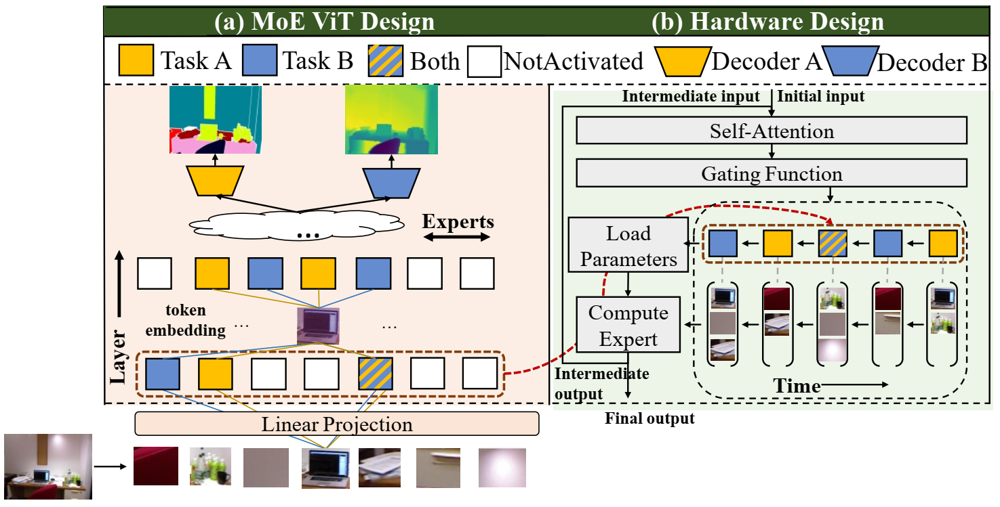

About Me
I am a Ph.D. candidate in Electrical Computer Engineering at The University of Texas at Austin advised by Prof. Atlas Wang at VITA group.
I work closely with Prof. Marco Pavone and Prof. Yue Wang on 3D end-to-end models with robust generalization capabilities; with Prof. Achuta Kadambi on recovering 3D/4D signals that capture the space-time structure of our world from casually captured data; and with Prof. Callie Hao on hardware-software co-design.
I was the awardees of Qualcomm Innovation Fellowship 2022.
Recent News
- I will serve as the Area Chair for NeurIPS 2025.
- Our ICLR'25 (4K4DGen) is selected as spotlight presentation.
- Our NeurIPS'24 (LightGaussian) is selected as spotlight presentation.
- Our Symbolic Visual RL was accepted by IEEE Trans. PAMI.
- Our IROS'24 (Multi-modal 3DGS SLAM) is selected as oral pitch finalist presentation.
- Our CVPR'24 (Feature-3DGS) is selected as highlight presentation.
- Our CVPR'23 (NeuralLift-360) is selected as highlight presentation.
- I was one of the awardees of the Qualcomm Innovation Fellowship (North America) 2022 (QIF 2022). Innovation title: "Real-time Visual Processing for Autonomous Driving via Video Transformer with Data-Model-Accelerator Tri-design".
- We won 3rd place in the University Demo Best Demonstration at the 59th Design Automation Conference (DAC 2022). We demo for a multi-task vision transformer on FPGA.
- Our CVPR'22 (CADTransformer) is selected as oral presentation.
- Our paper for CVPR'20 (Cascade Cost Volume) is selected as oral presentation.
Researches Interests
My research has been demonstrated on platforms such as Quest 3, implemented within IARPA projects, and integrated into multiple commercial products.
Selected Publications
Full publication list at Google
Scholar
* denotes equal contribution, † denotes project lead.


Invited Talks
-
Scalable 3D/4D Assets Creation @ Duke. November 2024.E cient 3D Learning for Autonomous System @ UNC, Guest Lecture. November 2024.Empowering Machines to Understand 3D @ Stanford, ASU, JHU, Yale. October 2024.3D Computer Vision @ TAMU, Guest Lecture. October 2024.From Efficient 3D Learning to 3D Foundation Models @ UCLA and CalTech. October 2024.Towards Universal, Real-Time 3D Construction and Interaction @ TAMU AI Lunch. October 2024.Spatial Intelligence via Reconstruction, Distillation, and Generation @ Shanghai AI Lab. July 2024.Streamlined 3D/4D: From Hours to Seconds to Millisecond @ Google Research, VALSE Webinar . May 2024.Streamlined 3D/4D: From Hours to Seconds to Millisecond @ Google Research. May 2024.Real-Time Few-shot View Synthesis w/ Gaussian Splatting @ IARPA WRIVA Workshop. April 2024.Data-efficient and Rendering-efficient Neural Rendering @ IFML Workshop on Gen AI. November 2023.Unified Implicit Neural Stylization @ Xiamen University; Kungfu.ai. July 2022.
Experience
-
Meta, Reality Lab, Burlingame:Research Intern (year of 2024).
-
NVIDIA Research (remote):Research Intern (year of 2024).
-
Google AR, San Francisco:Research Intern (year of 2022).
-
Alibaba Group, Hangzhou:Senior Algorithm Engineer(2019 - 2021).
Services
-
Journal Reviewers:TPAMI, TIP, IJCV, Neurocomputing.
-
Conference Reviewers:NeurIPS 22/23, ICML 22/23, CVPR 22/23, ICCV 21/23, AAAI 21, ICME 2019.